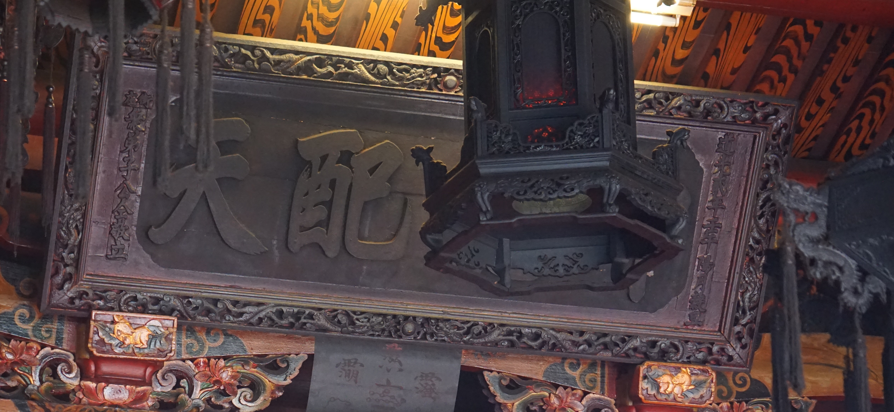
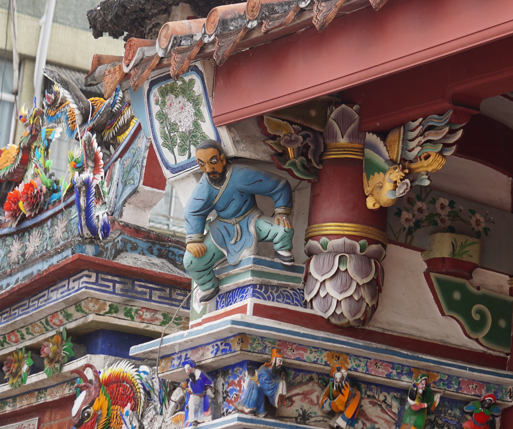
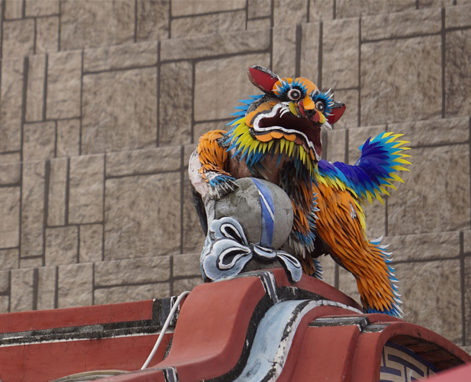
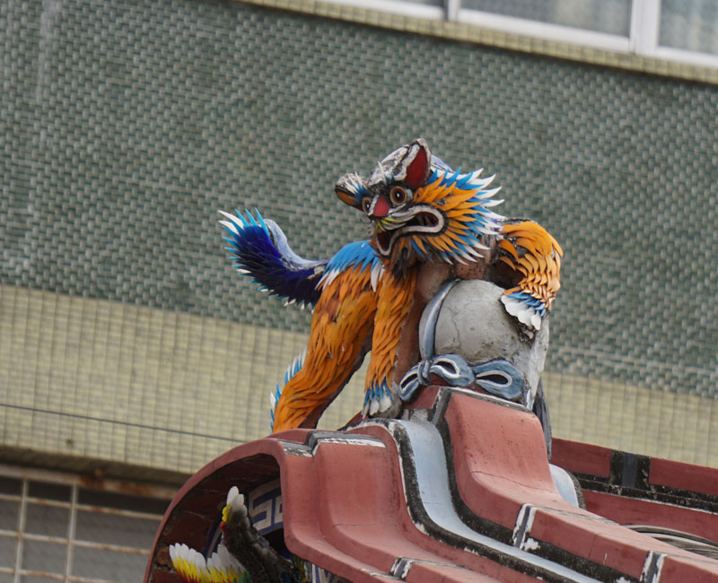
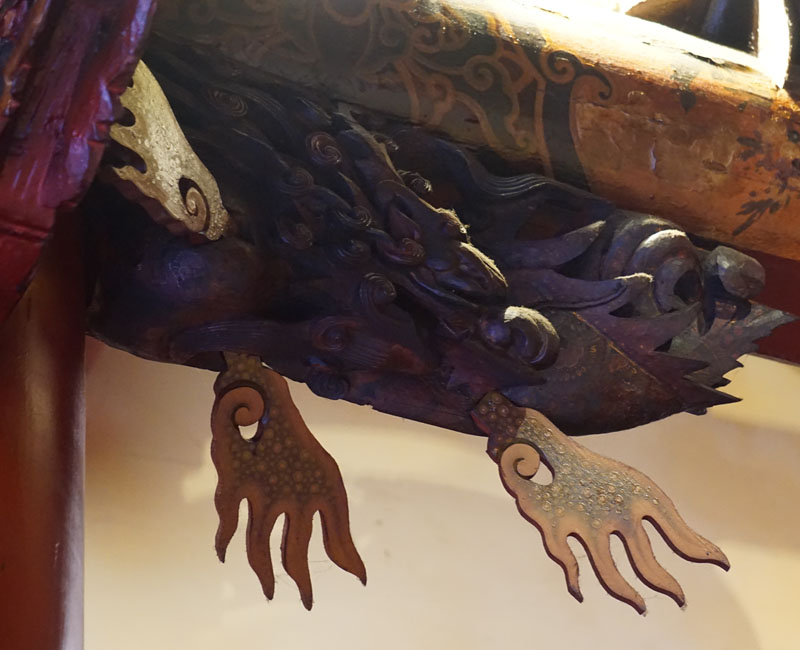

脈絡循序
旗山天后宮，是位於臺灣高雄市旗山區的廟宇，主祀海神媽祖，是旗山地區的信仰中心，為二殿二廂的格局，於2000年5月31日公告為高雄縣縣定古蹟，2010年五都改制後，改為直轄市定古蹟。在天后宮出現之前，蕃薯藔庄的公廟為福德祠，天后宮興建後，取代福德祠成為蕃薯藔街的信仰中心，為此並將原立於福德祠的「奉憲嚴禁羅漢腳惡習碑記」重刻一座立於天后宮。該廟前方之廟埕曾為羅漢門巡檢衙門所在地，日治時期為市集，當時曾在今平和街設公設市場以分散人潮，二次大戰後曾設有「新生市場」，現已拆除。

旗山天后宮位於清代臺灣縣羅漢外門里的蕃薯藔街，在天后宮建立之前，當地最主要的廟宇為福德祠，而最初的「蕃薯藔庄」則在福德祠南邊一帶。而後約在乾隆三十二年到四十四年（1767年－1779年）之間，福德祠 對岸道路已發展成商街，使得聚落中心北移，嘉慶十五年（1810年）羅漢門巡檢移駐蕃薯藔街增設下隘門後，福德祠與原蕃薯藔庄舊聚落在下隘門與溪溝的隔阻下被邊緣化。
嘉慶十年（1805年），臺灣縣知縣薛志亮倡建天后宮，其動機可能是受到當時海盜蔡牽活動的影響，欲以宗教力量穩住民心，另外還可能再進一步希望旗山天后宮能消融族群與階層對立，更能如內埔六堆天后宮在重要 時刻成為社會動員的基地。但隔年蔡牽事件即告平息，薛志亮於嘉慶十二年（1807年）亦調職，不久病逝，天后宮的興建募款也隨之鬆懈。
嘉慶二十一年（1816年），在吳廷棟、李大模、陳其祿先後三位巡檢與蕃薯藔街眾商號捐款下，歷經多年的募款終於完成並開始動工，於道光四年（1824年）完工。而在「興建天后宮碑志」中，顯示有一半的經費都是 來自蕃薯藔街眾商號，一般民眾與祭祀公業（共50多名）則佔了近四成，道光二十四年（1844年）重修而立的「重修天后宮碑記」則顯示商家出資比例已上升到八成，一般民眾則剩不到一成，李文環之著作即據興修經 費以在地商家為主的現象推論旗山天后宮的信仰僅及於清代蕃薯藔街一帶。
日治時期，旗山仕紳陳啟雲曾借用天后宮東廂於昭和二年（1927年）成立悟真社以教育宣傳本土語言文化，並建有惜字亭，直到二次大戰後因功能漸失而停辦，惜字亭則變成金爐。二次大戰後，1951年成立的旗山集樂 平劇研究社則借用天后宮西廂為北管練習場，東廂則為南管練習場，農曆每月初一、十五北管、南管會輪流在三川殿與正殿間的天井演奏，直到1970年代研究社才搬離天后宮。
而在整修方面，二次大戰之後旗山天后宮便於1946年進行整修，木料購自福建福州，經海運至屏東東港後再運到旗山，並聘「草賢師」施作三川殿龍虎堵泥塑與屋頂的剪黏。1964年再次整修以因應隔年媽祖聖誕，並聘柯丁添、周義雄等人雕刻正殿神龕花罩與網目。1975年整修，由吳振華承作三川殿、正殿與護龍的剪黏。1985年旗山鎮公所拆於警民協會蓋於1951年的「新生市場」後，廟方於廟埕前建牌樓，由潘岳雄承作彩繪。2008年再次整修，於2011年10月完工，2012年3月29日安座。 2016年2月6日，高雄美濃地震造成牌樓裝飾震碎、掉落。
鬼斧神工
現旗山天后宮之建築形式，廟身為磚木構造二進式傳統閩南廟宇，磚牆採用美式砌法，分為三川殿與正殿，以廊相接，正殿樑柱構架為疊斗式，廟兩邊 為後廳與廟室，中軸空間配置自前而後為牌樓、廟埕、三川殿、天井、正殿。其建築是依照台灣南部各地媽祖廟樣式而蓋的。

它的木造結構、斗拱、裝 飾及石材雕刻，皆來自中國，雖然經過好幾次的整修、擴建，但仍然保持閩南廟宇的風味。天后宮中保有道光二年的「坤德配天」匾以及嘉慶二十二年重修的「奉憲立絕棍害碑」(即皇帝詔令),是相當有價值的古物。
旗山天后宮雖然因為年代久遠,曾經過多次翻修，但大致看來，仍然保存著濃郁的古樸之風。供奉的鎮殿媽祖是來自福建的「軟身媽祖」，全身關節可動，高約五尺八寸，相傳已經有上百年歷史，極為珍貴。

仔細去看天后宮的兩個簷角左右對稱的位置，就會發現兩尊一手托起廟簷之番人造型做為苦力，打起整座廟宇，這勇猛憨厚的外國人就是所謂的「憨番」，俗稱「憨番扛廟角」、「憨番舉大杉」。「憨番扛廟角」已成為廟宇辉頭的代名詞，在建築實際功能意義上，是代替斗拱的角色，承托檐口的橫樑，並有鞏固及分散重力的效果，使結構更為穩固。
旗山天后宮建築形式古樸並具歷史保存價值，一直是旗山人的信仰中心，高雄縣政府於八十九年五月公告為縣定古蹟，成為本縣珍貴文 化資產之一。
作為一個縣定古蹟，旗山天后宮不僅保有多樣的歷史文物，更有悠久歷史的地方信仰，而更難能可貴的是其在旗山地區發展一個重要的歷區 史見證與其社會教化功能的展現,值得全民共同投注更多的心力共同維護保存。
該宮色彩鮮豔的剪貼，讓人忍不住多看一眼。古蹟修復只修補損壞部分，所以近看不難發現玻璃片新舊交雜的情形，但是玻璃材質保存狀況良好加上經過刷洗，修補後的剪黏讓該宮外觀更顯富堂皇。三川殿脊頂剪黏為雙龍護財子壽三仙，四爪青龍兩旁各立一鶴，燕尾兩端飾丹鳳，垂脊四個排頭以八仙故事為題材，三川步口水車堵，龍邊為「渭水聘賢」，虎邊為「三顧茅廬」。


正殿脊頂為雙龍護寶塔，兩側廂房脊頭前為獅子，後為孔雀，廂房與三川前簷的門樓為鰲魚，巧妙處在鰲魚嘴內裝「落水管」(又稱洩水管)，屋頂雨水可從此管排出，鰲魚張口吐水，有「澤被眾生」涵意。
從三川部口的大規壁、三川殿到正殿，都可欣賞該宮古蹟工藝的另一個精華─「棟架」。
該宮三川部口大規避的動價，是對古蹟建築有興趣的民眾相當好的範例，此處採「一通一瓜」式，加強穩定構件的短柱刻瓜狀，瓜體形狀優美色彩典雅。

三川殿為「二通一瓜」式，由於三川殿與正殿間並未夾拜殿，兩殿中間的天井光線充足，飾以彩繪的「大通」、「二通」和刻成瓜狀的短柱清晰可見，兩邊「大通」下課雕兩個鰲魚插角。正電動價用「三通五瓜」式，通樑是以彩繪，兩邊「大通」下課雕兩個鰲魚插角。
三川牌樓面另一精彩處在腰板以下的石雕和兩對看堵的泥塑。
三川前簷和正殿各有一對石雕「雲龍柱」;單龍攀附,龍頭在下，匠師稱為「雲從龍」作法，有別於其他廟宇龍柱用鏤空雕，該宮龍柱以浮雕技法刻出龍的形態，線條簡單卻傳神，兩對龍柱的柱珠也不相同，三川前簷為「蓮座形」，分16瓣，正殿為「鼓形」，上緣浮雕花草紋，與中門前的一對圓雕石獅，應同為清朝文物。
三川中門兩邊格扇門裙板石雕虎邊為「幼鹿孝親」，龍邊為「松鶴延年」，幼鹿跪地反哺丶仙鶴啣靈芝孝親，揭示「孝悌之家，必有後福」。
正殿神龕花罩浮雕、透雕技法並用，花罩兩邊各刻兩龍，騰雲而上，罩頂龍首兩旁各雕兩龍合計九龍，龍首上額「天上聖母」，花罩前一對木雕龍柱為鏤空雕，兩旁木雕窗，身板圖案上方為3隻蝙蝠，蝙蝠下有兩對螭虎相互勾繞，中間綴以紅蓮，蝙蝠取「蝠」與「福」同音，螭虎為勇猛之獸，雙雙對對相互勾繞有「繁衍」之意。
輾轉更迭
黃群生先生捐獻土地作為興建廟地
開始興建，立「奉憲嚴禁羅漢腳惡習」石碑
「坤德配天」匾額
重興建成今日規模，立「重興建天后宮碑誌」
重修，使用福州杉，「草賢師」製作剪粘
修建，主要聘鑿花柯丁添、周義雄等。洪武發等人捐天公爐
重修步口，作龍虎堵泥塑
廢新生市場，建牌樓
公告為高雄縣縣定古蹟
整建工程開工
整建工程完工
舉行新廟入廟典禮